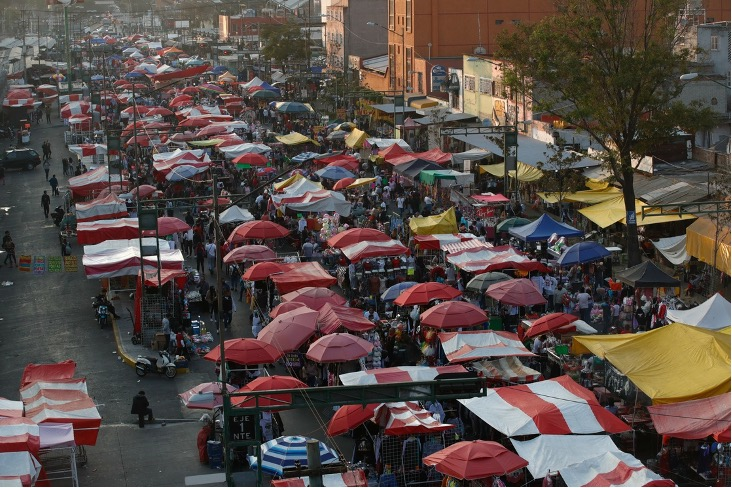

Crece la informalidad en México
En México, más del 50% de la Población Económicamente Activa (PEA) se encuentra en la informalidad, de acuerdo con la INEGI en 2023.
El trabajo informal en México conforma gran parte del sector laboral nos dice la INEGI, quienes
en un reciente reporte del primer trimestre del 2023 se presenta que más de la mitad de la
Población Económicamente Activa (PEA) del país se encuentra en dicha condición laboral.
Esta condición nos habla de la situación de la mayoría de la fuerza laboral en el país ya que,
en base al dato anterior, se puede decir que más de la mitad de los trabajadores de México no
están recibiendo las prestaciones que gozarían normalmente en un trabajo formal. Esto pone a los
trabajadores informales en una posición injusta, por lo que es necesario darle más visibilidad a
este problema.
Dentro de la economía, la informalidad es definida como la fuerza de trabajo remunerada no
protegida por la ley, la falta de seguridad social siendo una de las principales consecuencias
de éste. Las actividades agropecuarias, el servicio doméstico, trabajadores que cuentan con un
jefe laborando dentro de empresas, instituciones y el gobierno son ejemplos principales de los
vulnerables a este fenómeno social.
De los 58.4 millones de la población económicamente activa, 39.7 millones son trabajadores
subordinados, y según los datos proporcionado del reciente informe de la INEGI, 16.7 millones de
estos no cuentan con acceso a instituciones de salud, 13.2 millones no cuenta con prestaciones
laborales y 16.3 millones no cuentan con contrato escrito, por lo que podemos deducir que gran
parte de la población informal puede provenir de este sector.
Además, hay muchos factores que propician el trabajo informal dentro del país y esto se puede
observar entre los distintos sectores laborales, por ejemplo. Desde comercios e industrias
manufactureras que cumplen con el 35.8% del total, hasta las actividades agropecuarias,
comercios, y actividades económicas que entre muchas otras se incluyen los servicios básicos
como los son la electricidad, el agua, el gas y otras como la minería, comprenden otro 12% de
este trabajo informal (Tinoco, 2023) Esto sirve como ejemplo de que aquí en México se pueden
analizar trabajos que común y cotidianamente se escuchan entre la sociedad.
Como era mencionado con anterioridad, existen diversos factores implicados dentro del trabajo
informal, que al mismo tiempo lo favorecen. Es por ello por lo que se encontró que la localidad
tiene una influencia significativa en la cantidad de personas que optan por mantenerse en un
trabajo informal, ya que se encontraron datos de la INEGI del año presente los cuales muestran
que a finales del año pasado el estado de Oaxaca contaba con un 81.2% de su población
económicamente activa tomando parte en un trabajo informal, mientras que el estado de Coahuila,
con una población similar a la de Oaxaca, registró un porcentaje considerablemente menor de
34.2%. Con base en lo anterior, es posible afirmar que existen variaciones notables entre
estados en cuanto al trabajo informal.
Según datos de El Economista, entre el tercer trimestre de 2020 y el tercero de 2022, las
ocupaciones en el sector informal han aumentado entre el 40 y 80% del trabajo neto.
Referencias
INEGI. (2023). Encuesta Nacional de Ocupación y Empleo. Nueva Edición. Tercer Trimestre. INEGI.
Recuperado de:
https://www.inegi.org.mx/contenidos/programas/enoe/15ymas/doc/enoe_n_nota_tecnica_trim3_2022.pdf
Juárez, B. (2023) OIT Anticipa repunte de los empleos informales para compensar el rezago
laboral. El Economista. Recuperado de:
https://www.eleconomista.com.mx/capitalhumano/OIT-anticipa-repunte-de-los-empleos-informales-para-compensar-rezago-laboral-20230228-0018.html
González, R. (2022) Los Reyes Magos hacen malabares para entregar regalos. La Jornada. (Imagen)
Recuperado de:
https://www.jornada.com.mx/notas/2022/01/06/capital/los-reyes-magos-hacen-malabares-para-entregar-regalos/
Tinoco, O. (2023) El 54.8% de los mexicanos con trabajo está en la informalidad. Infobae.
Recuperado de:
https://www.infobae.com/mexico/2023/03/02/el-548-de-los-mexicanos-con-trabajo-lo-hace-en-la-informalidad/
El trabajo informal se beneficia de las ventas de temporada
En 2023, durante el mes de febrero, la informalidad tuvo un gran impacto en el estado de Tlaxcala, abarcando a comerciantes y negocios.
México, Tlax. Durante el mes de febrero en Tlaxcala, hubo un gran aumento de ventas en la
informalidad. Este aumento se le debe a los períodos y festividades que ocurrieron durante el
mes, como la Cuaresma y el Día del amor y de la amistad. La informalidad ha sido una opción para
muchas personas para lidiar con la crisis de desempleo que existe en la región.
Durante ciertas épocas, los vendedores experimentan una mayor demanda en sus productos, en este
caso lo podemos apreciar en los vendedores de flores, pues los floristas suelen tener un aumento
en la demanda durante festividades. Lo anteriormente dicho no solo ocurre en Tlaxcala, sino
también a nivel nacional, tanto que, según datos de Nadia Mendoza, periodista de El Sol de
Tlaxcala, “las flores registraron un aumento del 20% en adelante” (Mendoza, 2023, párr. 2); la
demanda alta de dichos productos obliga a los vendedores a incrementar su producción y ofrecer
una amplia gama de opciones en cuanto a tamaño, precio, tipo de flores, presentaciones y gustos.
Los floristas y dueños de florerías suben el precio de las flores para aumentar sus ganancias,
por ejemplo, las rosas, las cuales son las más vendidas, el precio experimentó un aumento
significativo pasando de los cinco pesos a los veinte pesos cada una (Mendoza, 2023. párr. 7),
con lo anterior se puede observar un aumento en los precios de los productos, el mismo fenómeno
ocurre con otros negocios dentro de la informalidad.
Dicho esto, los trabajadores informales utilizan a su favor festividades para poder vender sus
productos con mayor facilidad y a mayor precio, por lo que muchas familias se inclinan por
privilegiar la compra de estos mismos productos; al considerar todo esto, en Tlaxcala los
establecimientos comerciales de pescado y marisco tuvieron un excelente inicio de año, Mendoza
(2023) afirma que en la temporada de Cuaresma los trabajadores informales se benefician por las
creencias que tienen las personas para no consumir carnes rojas, todo esto de acuerdo a lo que
dicta su religión.
De acuerdo con los artículos de Nadia Mendoza (2023) existe una tendencia en los trabajadores
informales en aumentar los precios durante los periodos con alta actividad (párr. 2), haciendo
énfasis en temporada de festividades, lo que resulta ser un desafío para los consumidores que
tienen un presupuesto limitado y un beneficio para los trabajadores informales.
Esto demuestra que la cultura y las tradiciones religiosas pueden tener un impacto significativo
en los patrones de consumo de los clientes y en los ingresos de los trabajadores informales.
Además, es importante destacar que estos trabajadores son una parte vital de la economía, ya que
a menudo son personas de bajos ingresos que no tienen acceso a empleos formales y dependen de la
venta de productos informales para sobrevivir. Por lo tanto, es necesario buscar formas de
apoyar y regularizar esta actividad económica informal para mejorar las condiciones de vida de
estas personas y garantizar que los consumidores tengan acceso a productos seguros y de calidad.
Referencias
Mendoza, N. (2023). Arranca Cuaresma con buenas ventas. El sol de Tlaxcala. Recuperado de:
https://www.elsoldetlaxcala.com.mx/local/arranca-cuaresma-con-buenas-ventas-9678774.html
Mendoza, N. (2023). Aumenta San Valentín el precio de las flores. El sol de Tlaxcala. Recuperado
de:
https://www.elsoldetlaxcala.com.mx/local/aumenta-san-valentin-el-precio-de-las-flores-9606561.html